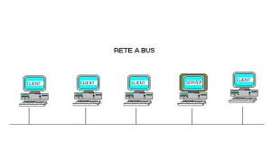

| IMMAGINE |
NOME |
DESCRIZIONE |
VANTAGGI E SVANTAGGI |
| |
Rete punto a punto |
Una rete punto a punto è realizzata unendo ogni device della rete con un cavo |
VANTAGGI
1) Ogni nodo poù parlare direttamente con tutti gli altri
2) è una rete molto veloce
SVANTAGGI
2)Sono necessari device speciali cioè hanno bisogno tante schede di rete tanto quanto sonop i nodi
|
|
Rete a stella |
Una rete a stella funziona collegando tutti i device a un punto centrale. Questo nodo centrale può essere un computer speciale o un hub o uno switch |
VANTAGGI
1- è una rete molto semplice.
2- E' una rete molto economica.
SVANTAGGI
1) Nel caso si rompa il computer centrale non vanno gli altri.
2) Tutte le comunicazioni passano nel nodo centrale che se non è ben programmato lascia vedere i dati agli altri nodi |
 |
Rete ad anello |
Prevede che ogni nodo sia collegato ad altri due. |
VANTAGGI
1- E' una rete semplice.
2- E' una rete semplice da espandere.
SVANTAGGI
1- La rottura di un nodo blocca tutta la comunicazione.
2- Per parlare tra due nodi potrebbe essere necessario passare per tutti gli altri nodi della rete. |
 |
Rete a bus |
Questo tipo di topologia è una variante di rete magliata non completamente connessa, che si può modellizzare anche come un insieme di reti a stella interconnesse tra loro in modo gerarchico. Nodi e canali sono disposti in modo ramificato; questa topologia è la preferita per le reti WAN anche perché comporta costi minori, tuttavia se si guasta un canale o un nodo viene compromessa la funzionalità di parte della rete o dell'intera rete (se si è guastato il nodo o il canale d'origine). Su questa topologia di rete si basa Internet |
VANTAGGI
1- E' una rete semplice da realizzare
2- E' molto economica
SVANTAGGI
1- la rottura di un terminatore può bloccare la rete
2- se si rompe il bus si blocca tutta la rete |
|
Rete a albero |
la rete a albero è una rete in cui sono definite delle gerarchie cioè un nodo può essere padre di un altro nodo. ogni nodo è collegato ad un altro nodo che può vedere pezzi di rete maggiori |
VANTAGGI
1- E' adatta a gestire piccoli gruppi che devono condividere risorse
2- la rottura di un nodo consente alle sottoreti di funzionare
SVANTAGGI
1- è una rete complicata da realizzare che mantenere
2- l'aggiunta di un nodo può richiedere configurazioni complesse |
tipologie di rete
Nome |
Immagine |
Descrizione |
Vantaggi/Svantaggi |
LAN
(local
area
network) |
 |
è una rete di piccole dimenzioni normalmente copre una stanza o piccoli edifici |
VANTAGGI
1-è una rete semplice
2- è facilmente estendibile SVANTAGGI
1- è adatta solo per piccole aree
2- ha una sicurezza limitata |
CAN
(campus
area
network) |
|
è una rete più grande e compressa di una lan copre più edifici vicini ed è composta da sottoreti lan. |
VANTAGGI 1-normalmente è più sicura di una lan
2-consente la condivisione di risorse aziendali senza accesso a internet SVANTAGGI1- è normalmente più costosa
2- è normalmente più complessa da gestire |
MAN
(metropolitan
area
network) |
 |
è una rete che copre parti di una città è normalmente composta da sottoreti can |
VANTAGGI 1-Consente di condividere risorse aziendali anche tra sedi diverse
2- è una rete sicuraSVANTAGGI1-è una rete complicata e costosa
2- non è sempre possibile realizzarla |
WAN
(wide
area
network) |
 |
è una rete che copre regioni del mondo ed è normalmente composta da sottoreti man |
VANTAGGI 1-consente di realizzare una rete parallela ad internet 2- è una rete sicura SVANTAGGI1-ha dei costi proibitivi
2- è una rete complicata da realizzare e da gestire |
WLAN
(wirless
lan) |
 |
è una rete che che si basa su componenti wi-fi |
VANTAGGI 1-è una rete semplice da realizzare e gestire
2- è la rete più economica da realizzare SVANTAGGI1-è una rete poco sicura
2-le prestazioni offerte non sono molto buone |